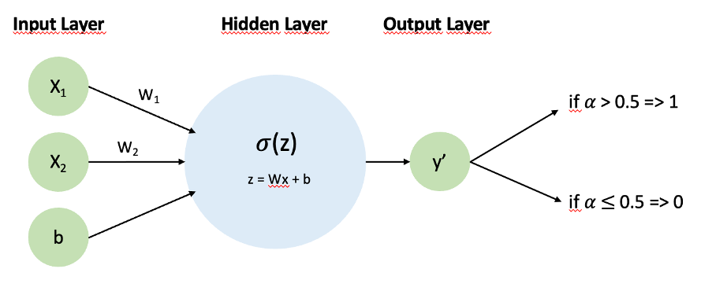
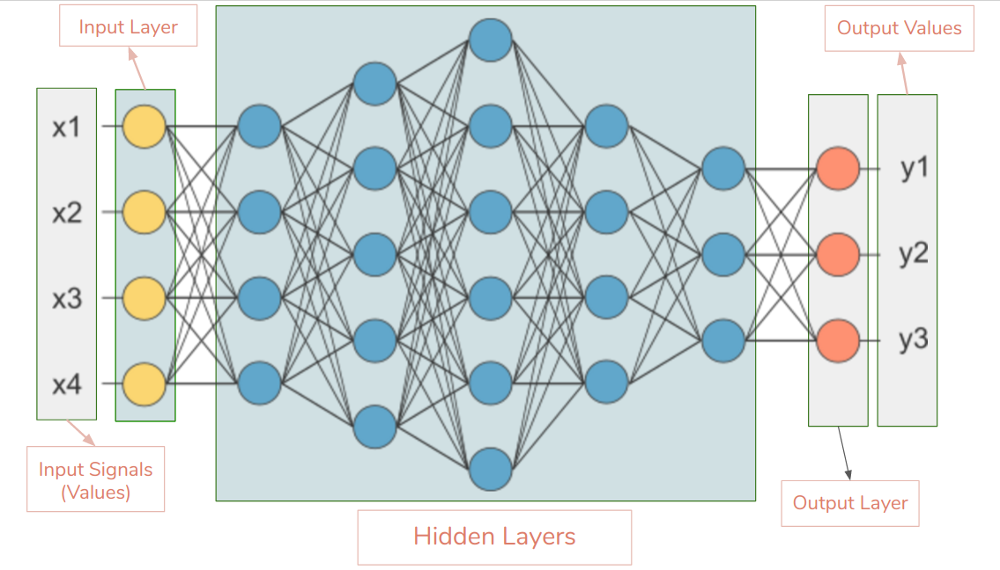
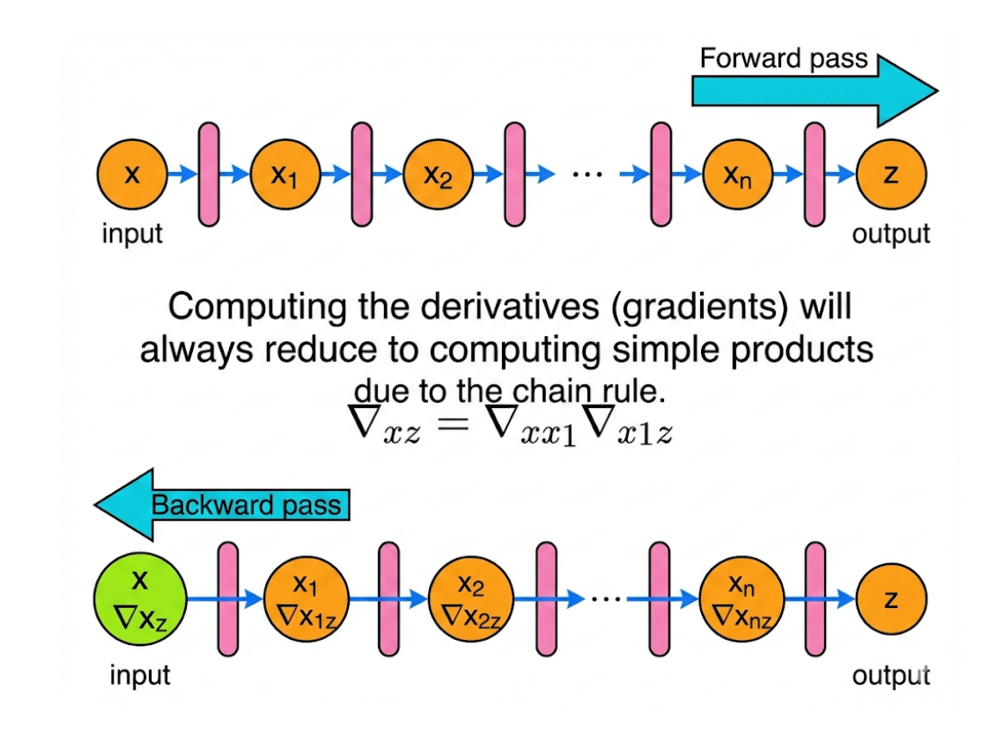
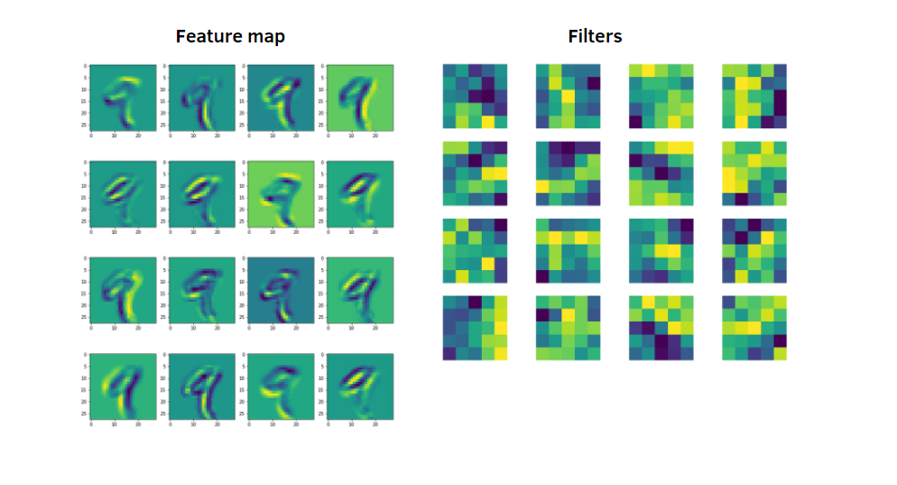
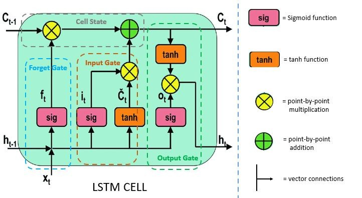
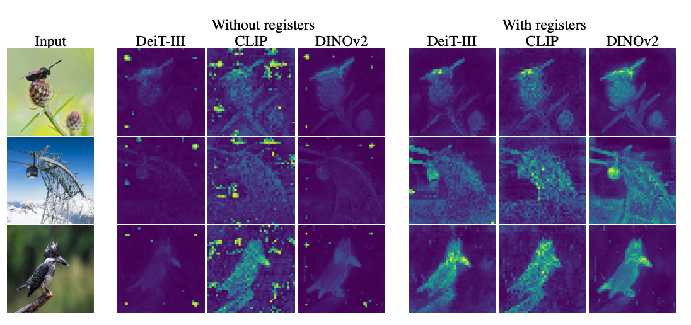
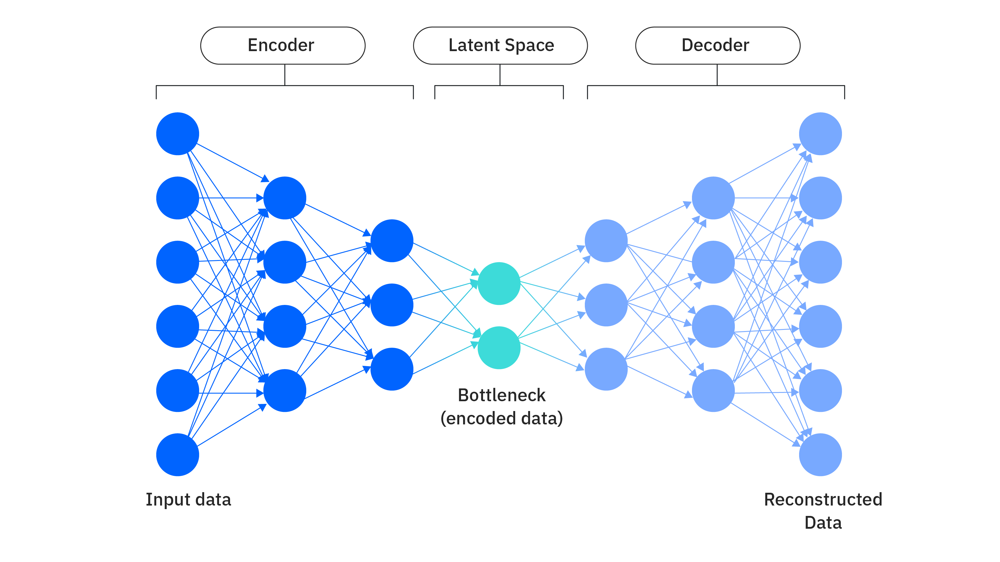
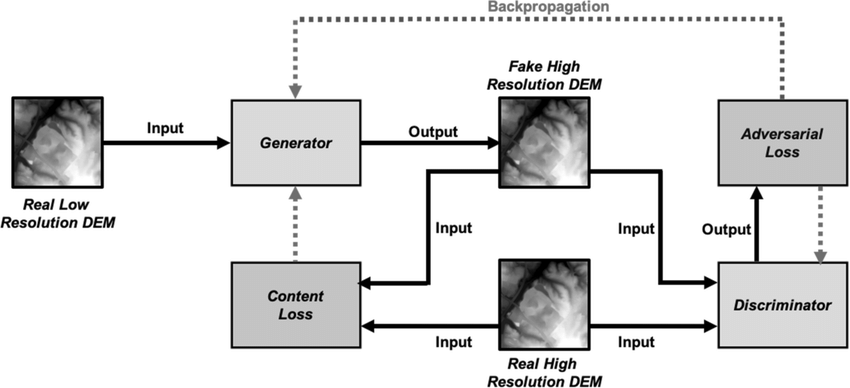

Weight
A learned number that controls how strongly an input matters.
Part 3
This page explains neural networks as clearly as possible for first-time learners, while still covering the pieces used in modern models.
A learned number that controls how strongly an input matters.
A function that adds non-linearity so networks can model complex patterns.
A score of how wrong the model currently is.
The process of sending error information backward to update weights.
A neural network is a stack of mathematical functions that transforms input into output. Each layer extracts more useful structure from the previous one. With enough data and training, this layered structure can represent very complex relationships.
Analogy: Think of a newsroom. First team collects raw facts, second team organizes themes, third team writes conclusions. Each layer refines information.
A neuron computes a weighted sum of inputs, adds a bias, then applies an activation. Weights control importance; bias shifts the decision boundary. During training, these numbers are adjusted so predictions improve.
Single neuron: z = w1*x1 + w2*x2 + ... + b, output a = activation(z).
Activations add nonlinearity, which is essential. Without them, many layers collapse to an effectively linear model. ReLU is common due to efficient gradients, while sigmoid/tanh are still useful in specific outputs and recurrent settings.
Analogy: Activations are gatekeepers deciding when a signal is strong enough to pass through.


Input data flows through each layer until the model outputs a prediction. Nothing is updated yet; this is only prediction generation.
The loss measures how wrong the prediction is. Different tasks use different losses: mean squared error for regression, cross-entropy for classification.
Analogy: Loss is a scoreboard. The model practices until the score improves.
Backpropagation applies the chain rule to compute how each weight contributed to the final error. It sends error signals backward through layers so each parameter gets a useful update direction.
Core idea: Reuse intermediate derivatives efficiently. This is what makes deep learning computationally feasible.
After gradients are computed, an optimizer updates parameters. SGD, Momentum, RMSProp, and Adam differ in how they scale and smooth updates, affecting training speed and stability.
Analogy: Backprop tells you slope direction; optimizer decides step style: cautious, fast, or adaptive.

Convolutions share weights across local regions, making CNNs efficient and effective for spatial data. Pooling and depth help detect patterns from simple edges to complex objects.
Analogy: Reading a map block by block, then combining local clues into a full route.
Sequence models keep memory of prior steps. LSTM/GRU add gates to decide what to remember, what to forget, and what to output, improving long-range pattern capture.
Analogy: While listening to a sentence, you keep important words in mind and drop irrelevant ones.
Transformers use attention so each token can look at other relevant tokens directly. This avoids strict sequential bottlenecks and scales well to long contexts and large datasets.
Self-attention builds weighted relationships among tokens; positional encoding injects order information.



Generative models learn data distributions and sample new outputs. In practice, they are used for drafting text, synthetic images, design ideation, simulation acceleration, and data augmentation.
An encoder compresses input into latent space; a decoder reconstructs it. This supports compression, denoising, anomaly detection, and representation learning.
GANs train a generator against a discriminator. The generator tries to fool the discriminator; the discriminator learns to detect fakes. This game can produce highly realistic outputs when stable.
Analogy: A forger and detective improve together; each round forces the other to get better.
GNNs operate on nodes and edges, passing messages through graph structure. They are powerful for molecular prediction, recommendation graphs, and fraud detection networks.

